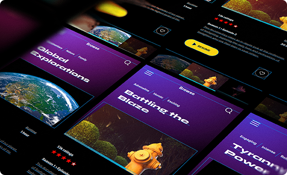

<div class="c-lbx__ctr">
  <div class="lbx-tool">
    <div class="c-btn-lbx-close js-fetch-close">
      <div class="c-btn__icon"></div>
    </div>
  </div>
  <div class="lbx-ctr">
    <div class="lbx-content u-scroll-y">
      <div class="lbx-photo u-imgfix-contain"></div>
      <div class="lbx-description">專案名稱：[專案名稱]<br>技術架構：[使用的技術，如 React、Node.js、Python、MongoDB、AWS 等]<br>專案類型：[網站 / APP / 後端系統 / AI 應用等]<br>專案概述<br>本專案旨在 [解決的問題或提供的功能，如提升用戶體驗、優化企業流程、強化數據分析等]，透過 [關鍵技術或創新點]，打造 [描述核心特點，如高效、安全、易用等] 的解決方案。</div>
    </div>
  </div>
</div>
<div class="c-lbx__mask js-fetch-close"></div>